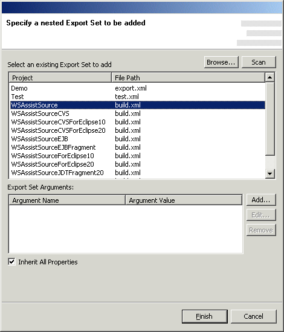
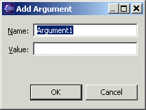

Export Set - Nested Export Sets Export sets may be nested within one another to build up arbitrarily complex deployment scenarios. To add an existing Export Set as a nested export set. If the Export Set is not listed, click the "Browse" button to select it in the project hierarchy or the "Scan" button to perform an exhaustive search of the loaded projects to find and Export Set files. If the nested Export Set specifies any parameters, then those parameters show up in the list of arguments necessary for the execution of the nested Export Set. To add a new argument to the list of defined arguments, click "Add". The Edit button opens a similar dialog so that the selected argument's value can be changed. Select one or more arguments in the list and click Remove to delete those arguments from the list.  The "Inherit All Properties" checkbox determines whether all of the properties defined in the outer export set are implicitly available to the nested export set during its execution. If checked, then the nested export set can use any property defined in the outer export set, if not checked, then a property must be explicitly pass as a parameter to the nested export set or defined within the nested export set for it to be used in the nested export set. |